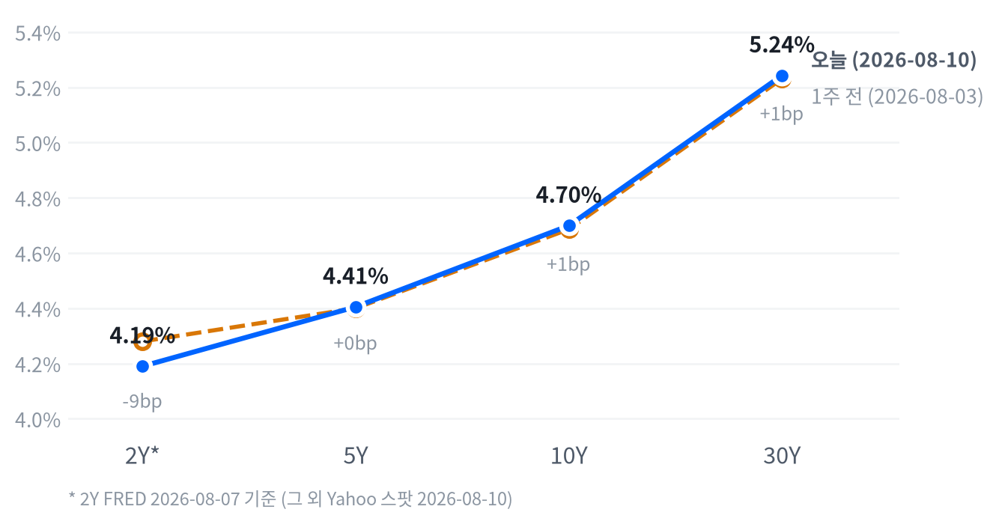

이날 시장을 움직인 단일 동인은 이란의 호르무즈 해협 관련 강경 요구와 사우디 아람코 정제시설 드론 공격, ADNOC 유조선 피격이 겹치며 촉발된 유가 급등이었다. WTI +5.27%, 브렌트 +5.15%는 미국 전략비축유가 1983년 이후 최저 수준까지 줄어든 상황과 맞물려 공급 불안을 증폭시켰고, 이는 지난주 금요일(8/7) 고용쇼크로 시작된 "9월 금리인상 확률 후퇴" 랠리에 인플레이션 재점화 우려라는 새로운 변수를 얹었다.
크로스에셋 정합성은 부분적으로만 성립했다. 에너지 섹터·WTI·브렌트·장기 국채금리가 함께 오르는 전형적인 리플레이션 조합이 확인됐지만, 금이 명목금리 상승에도 불구하고 동반 급등(+2.49%)한 점은 순수한 금리 경로보다 지정학적 안전자산 수요가 더 강하게 작동했음을 보여준다. 여기에 코히런트·루멘텀·마벨 등 AI 인프라주의 급락은 거시 재료와 무관한 자체 밸류에이션 조정 성격이 짙어, 이날 장세는 매크로 하나의 축만으로는 설명되지 않는 다층적 구조였다.
다음 촉매는 8월 12일(수) 발표될 7월 CPI·PPI다. 유가 급등이 헤드라인 인플레이션에 전가될지, 아니면 6월까지 이어진 디스인플레이션 추세(CPI YoY 3.73%, 근원CPI YoY 2.81%)가 유지될지가 이번 주 채권·주식 방향을 가를 핵심 변수다. 코히런트의 8월 12일 실적 발표도 AI 광통신 밸류체인 조정이 펀더멘털 이슈인지 포지셔닝 청산인지를 가늠할 단기 이벤트로 주목할 만하다.
| 지수 | 종가 | 등락 | 등락률 |
|---|---|---|---|
| S&P500 가치주 | 236.33 | +0.55 | +0.23% |
| S&P500 | 7,753.11 | -4.53 | -0.06% |
| 다우존스 | 53,975.98 | -60.95 | -0.11% |
| S&P500 성장주 | 141.75 | -0.35 | -0.25% |
| 나스닥종합 | 26,605.36 | -85.26 | -0.32% |
| 러셀2000 | 3,017.40 | -17.09 | -0.56% |
| 섹터 | 종가 | 등락 | 등락률 |
|---|---|---|---|
| 에너지 | 60.18 | +2.68 | +4.66% |
| 헬스케어 | 168.44 | +2.76 | +1.67% |
| 소재 | 53.18 | +0.32 | +0.61% |
| 커뮤니케이션 | 111.83 | +0.58 | +0.52% |
| 금융 | 57.81 | +0.21 | +0.36% |
| 임의소비재 | 119.67 | -0.19 | -0.16% |
| 필수소비재 | 84.95 | -0.17 | -0.20% |
| 산업재 | 184.60 | -0.58 | -0.31% |
| 기술 | 186.32 | -1.65 | -0.88% |
| 유틸리티 | 43.13 | -0.48 | -1.10% |
| 리츠 | 44.40 | -0.58 | -1.29% |
나스닥은 개장가(26,668.77) 대비 10시30분(ET)에 고점(+0.21%)을 찍은 뒤 매물이 쏟아지며 12시30분 저점(-0.45%)까지 밀렸고, 이후 낙폭을 일부 되돌렸으나 상승분을 완전히 회복하지 못한 채 소폭 하락(-0.32%)으로 마감했다.
S&P500과 러셀2000도 같은 시각대에 동일한 패턴을 그렸다 — S&P500은 10시30분 고점(+0.28%)에서 12시30분 저점(-0.11%)까지 미끄러졌고, 러셀2000은 9시30분 고점(+0.18%) 이후 역시 12시30분 저점(-0.44%)까지 소형주 매도세가 집중됐다. 세 지수 모두 오전 고점이 무너진 시점이 WTI 급등이 본격화된 구간과 겹치는데, 호르무즈 해협발 유가 급등이 정오 무렵 위험자산 심리를 냉각시킨 것으로 풀이된다.
엔비디아는 개장 직후 9시30분 고점(224.14달러, +0.31%)을 찍은 뒤 오후까지 낙폭을 키워 12시30분 저점(216.77달러, -2.99%)까지 밀렸다가 소폭 반등해 -2.86%로 마감했다. 지수 대비 훨씬 큰 변동폭은 같은 날 동반 급락한 코히런트·루멘텀·마벨 등 AI 인프라 밸류에이션 조정에 엔비디아도 연동된 결과로 보인다.
업종 로테이션은 순수한 유가발 리플레이션 트레이드였다. 에너지(+4.66%)가 압도적 1위를 차지했고 헬스케어(+1.67%)·소재(+0.61%)·커뮤니케이션(+0.52%)·금융(+0.36%)이 뒤를 이은 반면, 금리·성장 민감도가 높은 기술(-0.88%)·유틸리티(-1.10%)·리츠(-1.29%)가 하위권에 몰렸다.
S&P500 가치주(+0.23%)가 성장주(-0.25%)를 앞섰고 러셀2000(-0.56%)이 대형주 전반을 하회한 점은 이번 유가 급등이 금리 상승(장기물)과 결합해 듀레이션이 긴 자산에는 부담으로 작용했음을 시사한다. 포지션 관점에서는 에너지 강세를 추격하기보다 헬스케어처럼 유가와 무관하게 자체 모멘텀(실적·M&A)을 지닌 섹터에서 로테이션 기회를 찾는 편이 리스크 대비 매력적이다.
| 만기 | 2026-08-10 종가 | 전일比(bp) | 1주 전 | 주간 변화(bp) |
|---|---|---|---|---|
| 2Y* | 4.19% | -6.0bp | 4.28% (07-31) | -9.0bp |
| 5Y | 4.405% | +4.3bp | 4.400% (08-03) | +0.5bp |
| 10Y | 4.699% | +3.9bp | 4.686% (08-03) | +1.3bp |
| 30Y | 5.243% | +3.2bp | 5.231% (08-03) | +1.2bp |

2s10s 스프레드는 50.9bp(2Y FRED 08-07 vs 10Y Yahoo 08-10 기준)로, 동일자 FRED 기준으로는 46.0bp다. 두 값의 차이는 4.9bp로 5bp 문턱에 살짝 못 미쳐 날짜 불일치보다는 실제 스프레드 수준을 대체로 반영한다고 봐도 무리가 없다.
다만 2Y가 FRED 랙 때문에 8/7(금) 고용쇼크 당일 종가를 담고 있어, 이번 주 초 호르무즈발 유가 급등이 아직 2Y에는 반영되지 않았을 가능성이 크다는 점은 유의해야 한다. 같은 기준일(야후, 08-10)로만 비교 가능한 5s30s 스프레드는 83.8bp로, 이날 5Y가 +4.3bp, 30Y가 +3.2bp 상승해 벨리가 장기물보다 조금 더 크게 오르는 완만한 베어 플래트닝(bear flattening)이 당일 벨리~장기 구간에서 나타났다.
주간 기준으로는 2Y가 -9.0bp 하락한 반면 5Y·10Y·30Y는 +0.5~+1.3bp로 사실상 보합이어서, 2s10s 스프레드는 한 주 사이 확대(약 40.6bp→50.9bp 추정)되며 전형적인 불 스티프닝(bull steepening) 모습을 보였다. 다만 전단(2Y)의 관측 시점이 후단과 최소 하루 이상 어긋나 있어, 이 주간 스티프닝의 상당 부분이 8/7 고용쇼크 직후의 2Y 리프라이싱을 그대로 반영한 결과일 뿐 이번 주 내내 지속된 흐름은 아니라는 점을 감안할 필요가 있다.
듀레이션 전략 관점에서는 벨리~장기 구간이 이미 호르무즈발 인플레이션 우려를 일부 반영해 소폭 밀려 오른 만큼, 8/12 CPI를 확인하기 전까지 장기물 신규 매수는 자제하고 2Y 위주로 저가 매수 기회를 엿보는 편이 안전하다. 손절 기준은 CPI·PPI가 유가 전가로 예상보다 뜨겁게 나와 커브가 재차 베어 스티프닝으로 돌아설 경우로 잡는다.
| 통화쌍 | 종가 | 등락 | 등락률 |
|---|---|---|---|
| 달러인덱스(DXY) | 99.81 | +0.21 | +0.21% |
| USD/KRW* | 1,417.71 | +10.71 | +0.76% |
| USD/JPY | 159.26 | +0.85 | +0.54% |
| EUR/USD | 1.1547 | +0.0023 | +0.20% |
달러/엔은 자정(00:00 ET) 무렵 저점(157.82엔, 개장가 대비 -0.06%)을 찍은 뒤 거의 쉬지 않고 우상향해 저녁 8시30분(20:30 ET) 고점(159.36엔, +0.92%)까지 올랐고, 종가(159.29엔)도 고점 부근에서 형성됐다. 7월 31일 미·일 공조 개입으로 155엔까지 급락했던 엔화가 이번 세션에서도 되돌림을 이어가며 개입 효과가 상당 부분 반납된 모습이다.
달러인덱스는 +0.21% 상승했고 원화도 달러 대비 -0.76%(1,417.71원, 08-11 반영) 절하됐지만, 유로만 +0.20%로 함께 강세를 보여 통화별로 방향이 다소 엇갈렸다. 엔화·원화 등 아시아 통화 중심의 약세와 달러인덱스 강세가 대체로 궤를 같이한 반면 유로만 예외적으로 동반 상승해, 이번 재료(호르무즈 리스크·국채금리 반등)가 달러/아시아 통화 축에 더 뚜렷하게 작용했다고 볼 수 있다.
| 품목 | 종가 | 등락 | 등락률 |
|---|---|---|---|
| WTI(달러/배럴) | 82.30 | +4.12 | +5.27% |
| Brent(달러/배럴) | 87.85 | +4.30 | +5.15% |
| 천연가스(달러/MMBtu) | 2.778 | +0.116 | +4.36% |
| 금(달러/온스) | 4,448.60 | +107.90 | +2.49% |
WTI는 이날 최대 변동폭을 기록한 자산이다. 아시아·유럽 장 새벽 2시(ET) 저점(77.79달러, 개장가 대비 -1.27%) 이후 거의 하루 종일 상승세를 이어가 오후 4시30분 고점(82.38달러, +4.56%)까지 치솟았고, 종가(82.30달러)도 고점 바로 아래에서 형성됐다. 이란의 호르무즈 해협 재개 조건 강경 요구, 사우디 아람코 정제시설 드론 공격, ADNOC 소속 유조선 피격 소식이 겹치며 세션 내내 매수세가 이어진 결과다.
금도 오전 9시30분 저점(4,375.00달러, 개장가 대비 -0.29%)을 찍은 뒤 오후 3시30분 고점(4,453.80달러, +1.51%)까지 꾸준히 오르며 +2.49%로 마감했다. 통상 금은 명목금리 상승과 반대로 움직이는 경우가 많지만, 이날은 국채 장기물 금리(10Y +3.9bp, 30Y +3.2bp)가 함께 오른 가운데도 금이 동반 강세를 보여 지정학적 리스크에 따른 안전자산 수요가 실질금리 경로보다 더 강하게 작용했다고 볼 수 있다.
| 자산군 | 판단 | 근거 |
|---|---|---|
| 주식 | 중립, 에너지·헬스케어 선별 비중확대 | 에너지(+4.66%)·헬스케어(+1.67%)가 견인했지만 기술(-0.88%)·리츠(-1.29%)·유틸리티(-1.10%)가 눌리며 지수 전체는 소폭 약세. 러셀2000(-0.56%)의 상대 부진은 유가·금리 반등이 소형주에 부담으로 작용했음을 시사 |
| 채권 | 단기물 저가 매수, 장기물은 CPI 확인 후 대응 | 2Y는 주간 -9.0bp로 고용쇼크를 선반영한 반면 5Y·10Y·30Y는 유가발 인플레 우려로 이번 주 사실상 보합. 8/12 CPI 전까지 장기 듀레이션 확대는 자제 |
| FX | 엔화 약세 베팅 유지, 원화는 관망 | USD/JPY가 개입 효과를 반납하며 +0.54% 상승(159.26엔). 원화는 -0.76%로 약세 폭이 더 커 단기 변동성 확대 가능성에 유의 |
| 원자재 | 원유 단기 트레이딩 비중확대, 금 보유 유지 | WTI·브렌트가 지정학 리스크로 5%대 급등, 장중 되돌림 없이 고점 마감. 금도 명목금리 상승 속 안전자산 수요로 +2.49% 동반 강세 |
| 메모리 | 중립, 관망 유지 | 마이크론(-1.89%)·시게이트(-1.45%) 약세, 웨스턴디지털(+0.93%)은 상대적으로 견조. 8월 초 대규모 조정 이후 낙폭이 완화되며 소강 국면에 진입 |
| AI 인프라 | 광통신 비중축소, 전력인프라는 저가매수 관찰 | 코히런트(-14.24%)·루멘텀(-8.61%)·마벨(-4.65%)이 밸류에이션 되돌림으로 급락. GE버노바(+0.05%)·버티브(-0.84%)는 상대적으로 안정적이어서 되돌림 국면의 대안으로 주목 |
첫째, 호르무즈 해협 리스크 확산이다. 이란의 강경 요구가 실제 해협 통항 제한으로 이어지거나 추가 유조선·정제시설 피격이 발생하면 유가가 추가로 급등하며 8/12 CPI·PPI를 앞두고 인플레이션 우려가 걷잡을 수 없이 커질 수 있다. 확인 트리거는 호르무즈 관련 추가 보도와 WTI가 85달러선을 재차 시험하는지 여부다.
둘째, CPI·PPI 서프라이즈 리스크다. 8월 12일 발표될 7월 CPI가 유가 전가로 예상보다 뜨겁게 나올 경우 9월 FOMC 금리인상 확률이 재차 반등하며 채권·성장주 양쪽에 부담을 줄 수 있다. 반대로 디스인플레이션 흐름이 재확인되면 이번 유가발 조정은 일시적 노이즈로 소화될 가능성이 크다.
셋째, AI 인프라·광통신 밸류에이션 조정의 전이 리스크다. 코히런트·루멘텀의 급락이 실적(8/12) 확인 전 추가 확산될 경우, 엔비디아를 비롯한 AI 반도체 밸류체인 전반과 데이터센터 전력인프라주(GE버노바·버티브)로 read-through될 수 있다.
코히런트(Coherent, -14.24%) — 이날 개별 종목 중 최대 낙폭을 기록했다. 8월 12일 장마감 후 예정된 FY2026 4분기 실적 발표를 앞둔 차익실현 매도가 주된 배경으로, 직전 1주일간 +44.22%, 연초 이후 +105.41% 급등한 뒤였다는 점이 밸류에이션 부담을 키웠다. 옵션시장에서 다운사이드 헤지(풋 매수) 수요가 늘어난 점도 부정적 뉴스보다는 포지셔닝 청산에 가깝다는 근거로 제시된다.
에너지 섹터(XLE, +4.66%) — 이란의 호르무즈 해협 재개 조건 강경 요구, 사우디 아람코 정제시설 드론 공격, ADNOC 유조선 피격이 겹치며 WTI +5.27%, 브렌트 +5.15% 급등을 이끌었다. 미국 전략비축유가 1983년 이후 최저 수준까지 줄어든 점도 공급 불안 심리를 자극한 요인으로 꼽힌다.
헬스케어 섹터(XLV, +1.67%) — 최근 3개월 전 섹터 중 최고 수익률(약 +13%)을 기록 중인 로테이션 수혜가 이어졌다. 애브비 실적 서프라이즈, 유나이티드헬스의 2026년 가이던스 상향, 연초 이후 약 2,840억달러 규모로 불어난 업계 M&A 붐이 저평가 매력을 부각시키고 있다는 분석이다.
| 종목 | 종가 | 등락 | 등락률 |
|---|---|---|---|
| 엔비디아 | $217.55 | -6.41 | -2.86% |
| 삼성전자 | ₩230,000 | -1,000 | -0.43% |
| 마이크론 | $861.00 | -16.57 | -1.89% |
| 웨스턴디지털 | $438.34 | +4.04 | +0.93% |
| 시게이트 | $800.99 | -11.77 | -1.45% |
| SK하이닉스 | ₩1,420,000 | -2,000 | -0.14% |
8월 10일 세션 자체에서는 메모리 관련 개별 악재 뉴스가 확인되지 않았고, 종목별 등락도 마이크론 -1.89%, 시게이트 -1.45%, 삼성전자 -0.43%, SK하이닉스 -0.14%로 낙폭이 대체로 -1~-2%대에 그치며 웨스턴디지털(+0.93%)만 상승했다. 이는 8월 첫째~둘째 주에 걸쳐 진행된 대규모 메모리주 조정의 연장선이지만, 낙폭 자체는 눈에 띄게 완화된 모습이다.
앞선 조정은 8월 3일 시게이트·웨스턴디지털 -6%대, SK하이닉스·마이크론 -5%대 동반 급락으로 시작해, 8월 6일에는 샌디스크 -16%, 웨스턴디지털 -11%대, 마이크론 -6%대로 낙폭이 더 커졌다. 직접적 트리거는 샌디스크의 FY27 1분기 매출 가이던스(103억~108억달러)가 컨센서스 중앙값을 하회한 데 있었는데, 정작 직전 분기 실적은 매출 89.7억달러·데이터센터 매출 전분기 대비 +103%로 견조했던 만큼 이번 조정은 눈높이 하향에 따른 밸류에이션 되돌림 성격이 크다.
연초 이후 마이크론 +213%, 시게이트 +205%, 웨스턴디지털 +202%(조정 전 기준)에 달했던 AI 데이터센터發 메모리 슈퍼사이클 랠리를 감안하면, 최근 조정은 공급 과잉 우려에 따른 차익실현 성격이 크다는 게 다수 매체의 공통된 해석이다. 다만 2026년 1분기 DRAM 계약가가 최대 +95% 급등하는 등 HBM·DDR5·NAND 수요는 여전히 하이퍼스케일러 캐펙스에 강하게 연동돼 있어, 조정이 소강 국면에 접어든 지금은 신규 편입보다 변동성 완화를 확인하며 관망하는 편이 합리적이다.
| 종목 | 분야 | 종가 | 등락 | 등락률 |
|---|---|---|---|---|
| GE버노바 | 전력 인프라 | $990.85 | +0.53 | +0.05% |
| 버티브 | 데이터센터 냉각·전력 | $270.10 | -2.30 | -0.84% |
| 마벨 | AI 데이터센터 반도체(ASIC) | $208.56 | -10.16 | -4.65% |
| 루멘텀 | 광부품(InP) | $813.51 | -76.66 | -8.61% |
| 코히런트 | 광트랜시버/광학부품 | $325.15 | -53.98 | -14.24% |
코히런트와 루멘텀이 이끈 광학 밸류체인 급락의 공통 배경은 8월 12일 코히런트 실적 발표를 앞둔 차익실현이다. 두 종목 모두 직전 급등(코히런트 1주일 +44.22%·연초 이후 +105.41%) 이후였고, 주말 소셜미디어에서 벌어진 "옵틱스 vs 메모리" 밸류에이션 논쟁도 매도 심리를 자극한 요인으로 언급된다.
마벨은 장 초반 신제품(Bravera SC6 SSD 컨트롤러, Structera X CXL 플랫폼, Photonic Fabric 광학 아키텍처) 발표와 인도 R&D 허브 3년간 2.5억달러 증설 계획 소식에 힘입어 한때 +3~4% 상승 출발했다는 보도가 있었으나, 종가 기준으로는 -4.65%로 반전 마감했다. 세션 후반 코히런트·루멘텀발 AI 인프라 밸류에이션 되돌림에 동반해 상승분을 반납한 것으로 추정되며, 8월 27일 예정된 실적 발표를 앞둔 포지션 정리 성격도 겹친 것으로 보인다.
GE버노바(+0.05%)·버티브(-0.84%)는 특정 뉴스 촉매 없이 옵틱스주 대비 변동성이 크지 않았다. 투자 관점에서는 광학 부품(코히런트·루멘텀)이 이번 조정으로 밸류에이션 부담이 다소 완화된 만큼 8/12 실적에서 가이던스를 확인한 뒤 재진입을 검토하는 편이 안전하고, 전력 인프라(GE버노바·버티브)는 상대적으로 안정적인 흐름을 보인 만큼 조정 국면의 대안으로 관찰할 만하다.
| 지표 | Actual | Forecast | Previous | 발표일 | 판정 |
|---|---|---|---|---|---|
| JOLTS 구인건수 (K) | 7,359 | — | 7,537 | 2026-06 기준월 | — |
| 신규 실업수당 청구건수 | 199,000 | 203,000 | 198,000 | 2026-08-06 | 하회▼ |
| 신규 청구건수 4주 평균 | 198,750 | — | 203,250 | 2026-08-06 | — |
| 계속 실업수당 청구건수 | 1,801,000 | — | 1,777,000 | 2026-08-06 | — |
| 비농업고용 증감 (K) | -23 | — | +20 | 2026-08-07 | — |
| 실업률 (%) | 4.1 | — | 4.2 | 2026-08-07 | — |
| 평균시급 MoM (%) | 0.05 | — | 0.29 | 2026-08-07 | — |
| ADP 민간고용 (K) | +44 | +70 | +95(6월 상향조정) | 2026-08-05 | 하회▼ |
| 지표 | Actual | Forecast | Previous | 발표일 | 판정 |
|---|---|---|---|---|---|
| ISM 제조업 PMI | 55.6 | 54.0 | 53.3 | 2026-08-03 | 상회▲ |
| ISM 서비스업 PMI | 54.1 | — | 54.0 | 2026-08-05 | — |
| 산업생산 MoM (%) | 0.08 | — | 0.14 | 2026-06 기준월 | — |
| 내구재 주문 MoM (%) | 0.47 | — | -4.00 | 2026-06 기준월 | — |
| 신규주택판매 (K) | 628 | — | 618 | 2026-06 기준월 | — |
| 기존주택판매 | 4,090,000 | — | 4,190,000 | 2026-06 기준월 | — |
| 실질GDP 성장률 QoQ 연율 (%) | 1.5 | — | 2.1 | 2026년 1분기 | — |
| 지표 | Actual | Forecast | Previous | 발표일 | 판정 |
|---|---|---|---|---|---|
| 소매판매 MoM (%) | 0.22 | — | 1.02 | 2026-06 기준월 | — |
| 미시간 소비자심리지수 | 49.5 | — | 44.8 | 2026-06 기준월 | — |
| 지표 | Actual | Forecast | Previous | 발표일 | 판정 |
|---|---|---|---|---|---|
| CPI YoY (%) | 3.73 | — | 4.27 | 2026-06 기준월 | — |
| CPI MoM (%) | -0.42 | — | 0.47 | 2026-06 기준월 | — |
| 근원CPI YoY (%) | 2.81 | — | 2.96 | 2026-06 기준월 | — |
| 근원CPI MoM (%) | -0.02 | — | 0.21 | 2026-06 기준월 | — |
| PPI 최종수요 MoM (%) | -0.28 | — | 0.62 | 2026-06 기준월 | — |
| PCE 물가지수 YoY (%) | 3.67 | — | 4.08 | 2026-06 기준월 | — |
| 근원PCE YoY (%) | 3.29 | — | 3.42 | 2026-06 기준월 | — |
| 미시간 1년 기대인플레이션 (%) | 4.6 | — | 4.8 | 2026-06 기준월 | — |
CME FedWatch 기준 9월 FOMC 금리인상 확률은 8/7 고용쇼크 발표 직후 CNBC 보도로 하루 만에 58%에서 42%로 급락했고, 다른 소스는 8/10 시점 인상 확률을 약 40~44%(전주 67~82%대)로 집계해 대체로 방향은 일치한다. 12월까지 누적 인상폭 기대도 32bp에서 28bp로 낮아진 것으로 보도됐다.
그러나 8/10 세션에서 호르무즈발 유가 급등(WTI·브렌트 +5%대)은 인플레이션 재점화 우려를 자극하는 요인으로, 국채 장기물 금리(10Y +3.9bp, 30Y +3.2bp)가 이를 즉각 반영해 반등했다. 8월 첫째 주 컨센서스를 밑돈 지표들(ADP +44K vs 예상 +70K, 신규청구 199K vs 예상 203K)이 만든 도비시 재가격 흐름과, 이번 주 초 유가발 인플레 압력이 팽팽히 맞서는 구도가 8월 12일 CPI·PPI 발표 전까지 이어질 공산이 크다.
노동 축은 선행지표(ADP +44K, 예상 +70K 하회)와 후행지표(비농업고용 -23K, 실업률 4.1%로 개선)가 엇갈렸다. 다만 실시간성이 강한 신규 청구건수 4주 평균(198,750)이 직전(203,250)보다 오히려 낮아져, 대량 해고보다는 신규 채용 위축이 이번 냉각의 본질에 가깝다는 해석에 무게가 실린다.
활동 축은 선행 서베이 지표인 ISM 제조업(55.6, 컨센서스 54.0 상회)·서비스업(54.1, 전월 54.0 대비 소폭 개선)이 모두 확장 국면을 유지하며 개선 신호를 보낸 반면, 6월 기준월의 후행 실물지표(산업생산 +0.08% 둔화, 실질GDP +1.5%로 감속)는 다소 부진해 선행과 후행 사이에 시차 있는 엇갈림이 이어지고 있다.
소비 축은 선행지표인 미시간 소비자심리(49.5, 전월 44.8 대비 큰 폭 개선)가 뚜렷이 개선된 반면 후행지표인 소매판매(MoM 0.22%, 전월 1.02% 대비 둔화)는 감속해, 심리 개선이 아직 실제 지출로 이어지지 못한 시차 불일치가 관찰된다.
물가 축은 CPI·근원CPI·PPI·PCE·근원PCE가 모두 전월 대비 개선(둔화)됐고 미시간 기대인플레이션(4.6%, 전월 4.8%)도 함께 낮아져, 선행(기대)과 후행(실제 물가) 지표의 방향이 유일하게 완전히 일치한 축이었다. 다만 이는 모두 6월 기준월 데이터로, 이번 주 유가 급등이 반영될 7월 CPI(8/12 발표)가 이 정합성을 얼마나 흔들지가 관건이다.
기본 시나리오(확률 우세)는 노동시장 냉각과 6월까지의 물가 디스인플레이션이 함께 확인된 만큼, 유가발 일시적 인플레 우려에도 불구하고 연준이 9월 FOMC에서 인상을 보류하는 경로다. 이 경우 단기물 위주의 듀레이션 확대와 헬스케어 등 유가와 무관한 로테이션 수혜 섹터가 계속 우호적인 환경을 누릴 가능성이 높다.
대안 시나리오는 호르무즈 리스크가 장기화되며 유가 상승분이 7월 CPI·PPI에 본격 전가돼 디스인플레이션 추세가 훼손되는 경로다. 이 경우 9월 인상 확률이 재차 반등하며 장기 국채·성장주에 부담을 줄 수 있다. 이 시나리오를 가를 핵심 일정은 8월 12일 CPI·PPI, 호르무즈 해협 관련 추가 지정학 뉴스, 그리고 8월 12일 코히런트 실적이다.
자산배분 관점에서는 기본 시나리오에 무게를 싣되 8/12 CPI 전까지는 포지션 사이즈를 보수적으로 가져가며, 단기물 듀레이션 확대·헬스케어 비중확대 기조는 유지하되 장기물·AI 광통신 신규 진입은 확인 트리거가 나올 때까지 분할하는 접근이 합리적이다.